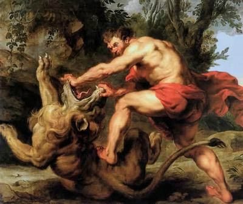

Los arquetipos universales son patrones, imágenes o símbolos primordiales, que residen en lo que se denomina el inconsciente colectivo. Se consideran formas innatas y heredadas, que estructuran la experiencia humana y se manifiestan de manera similar en mitos, sueños y culturas de todo el mundo.


El concepto fue desarrollado por el psiquiatra suizo Carl Gustav Jung (1875-1961) a principios del siglo XX. Aunque el término «arquetipo» ya existía en la filosofía antigua, Jung lo introdujo formalmente en la psicología moderna, para explicar por qué civilizaciones sin contacto previo compartían símbolos y figuras mitológicas casi idénticas.
El concepto de arquetipos universales es una teoría psicológica y filosófica ampliamente aceptada en las humanidades y la psicoterapia. Y ha sido de especial interés para los psicólogos analíticos (o junguianos), psiquiatras y estudiosos de la psicología profunda, pero que también ha sido objeto de estudio en la antropología, la mitología comparada, la literatura y, hoy en día, en el marketing y el branding, para la creación de identidades de marca.
Resulta muy interesante que cuando se comparan los grandes relatos míticos de la humanidad —desde Mesopotamia y Grecia hasta Israel, la India o los pueblos nórdicos— salta a la vista un hecho desconcertante: los personajes centrales se parecen demasiado entre sí. Cambian los nombres, los dioses y los escenarios, pero la estructura profunda del héroe, del salvador, del elegido o del hombre de fuerza sobrehumana, se repite con una regularidad casi matemática.
Ahora bien, desde una perspectiva histórica y científica (no teológica), esto no apunta a una «revelación sobrenatural» común a todos los pueblos, sino a algo mucho más simple y, a la vez, más inquietante: todos los seres humanos compartimos el mismo cerebro y las mismas necesidades simbólicas. Por lo que los mitos no nacen del cielo, sino de la mente.
El cerebro humano es, en efecto, una fábrica de arquetipos. Y tanto la psicología evolutiva como la neurociencia cognitiva, muestran que nuestro cerebro organiza la realidad en esquemas narrativos básicos:
El héroe protector.
La madre fecunda.
El padre autoritario.
El traidor.
El monstruo.
El sacrificio redentor.
La caída trágica.
Pero estos esquemas no son aprendidos culturalmente desde cero: son patrones universales de interpretación social y emocional. Cada cultura los viste con su propio lenguaje religioso, pero la estructura es la misma. Por eso los mitos se parecen, incluso sin contacto directo entre civilizaciones.
Un caso interesante es el de Sansón y Hércules, dos héroes de dos diferentes culturas, con un mismo molde. En efecto, Sansón, en el libro de los Jueces, y Heracles (Hércules) en la mitología griega, son ejemplos casi de manual del arquetipo del «héroe de fuerza sobrehumana y destino trágico».
Veamos algunos paralelos significativos:
Sansón (Biblia):
Nacimiento anunciado por un ser divino.
Fuerza física extraordinaria.
Mata un león con las manos.
Vida sexual turbulenta.
Traicionado por una mujer (Dalila).
Capturado, humillado, cegado.
Muerte violenta y espectacular.
Derriba columnas al morir.
Hércules (Mitología griega):
Hijo de Zeus y una mujer mortal.
Fuerza física sobrenatural.
Mata al león de Nemea.
Vida sexual turbulenta.
Arruinado por mujeres (Megara, Deyanira).
Enloquecido, culpable de matar a su familia.
Muerte dolorosa y apoteósica.
Asociado simbólicamente a columnas y límites del mundo.
No se trata aquí de coincidencias triviales. Es el mismo arquetipo del «héroe trágico de fuerza incontrolable», repetido con distintas teologías. Y aparece entonces un aspecto decisivo para la crítica bíblica: cuando un personaje encaja perfectamente en un molde mítico universal, su valor histórico se vuelve sospechoso. No porque sea imposible que haya existido alguien fuerte, sino porque:
Su biografía sigue un guion simbólico, no un registro cronístico.
Sus hazañas son hiperbólicas, no verificables.
Su función es teológica e identitaria, no documental.
Su narrativa está diseñada para inspirar, no para informar.
En el caso de Sansón, no actúa como un caudillo histórico común, sino como un héroe literario arquetípico, construido para encarnar la fuerza de Yahvé contra los enemigos de Israel, del mismo modo que Heracles o Hércules encarna la fuerza de Zeus para la identidad griega.
Pero esto es un problema para los «Libros Sagrados», porque si los personajes bíblicos se ajustan a los mismos moldes que los héroes mitológicos paganos, resulta entonces intelectualmente inconsistente afirmar que Hércules es un «mito», pero que Sansón es «historia real». Porque ambos responden al mismo mecanismo psicológico y cultural de creación de héroes. La diferencia de esto no es científica; es confesional.
O sea: la similitud entre arquetipos de distintas culturas, no prueba una verdad revelada común. Prueba algo mucho más humano: que el cerebro fabrica mitos de la misma manera en todas partes, y que las religiones no escaparon a ese proceso. Así, Sansón y Hércules no son el mismo hombre, pero sí son el mismo tipo de personaje: proyecciones simbólicas de la necesidad humana de imaginar fuerza, salvación, destino y tragedia. Y cuando una figura «histórica» encaja demasiado bien en un molde mítico universal, la duda no es irreverente: es simplemente racional.
[Godless Freeman]
[Crédito de imagen: Pedro Pablo Rubens, Sansón y el león]
Comentarios
Comments powered by Disqus